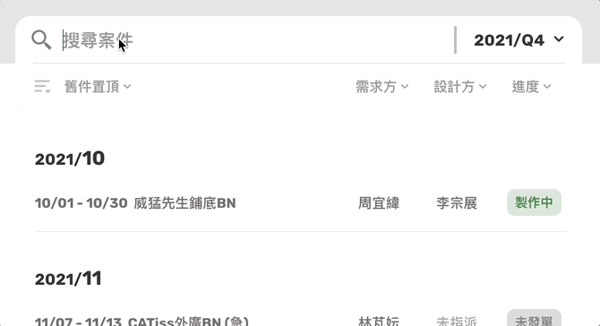
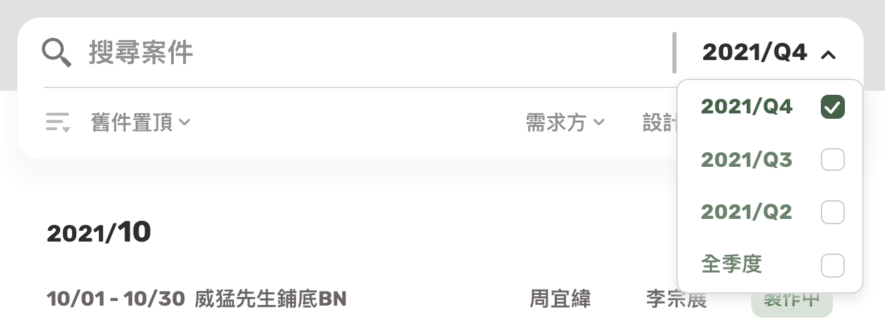
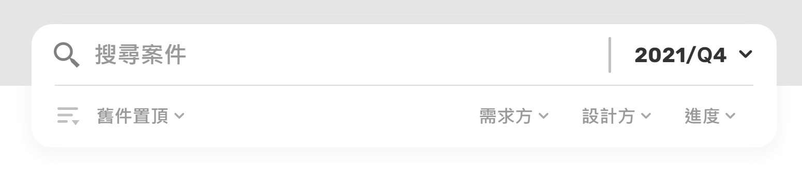

Hi 👋 歡迎
本系統為了優化設計案件申請流程而製作，主要針對（但不限於）作業量佔大宗的Banner案件。 您的帳號身份為
「需求方」
「設計方」
「管理方」
，系統將依照您的身份與負責品牌提供相應的操作權限。
案件搜尋
文字搜尋
── 除查找單一字詞外，可用空白鍵來同步進行多字詞查找

年份/季度
── 首頁預設顯示當前季度的案件

排序
── 可反轉切換案件羅列順序

進度
── 首頁預設顯示尚未結案的案件（包含未發單、製作中）
人員
── 用於查閱特定人員的相關案件
案件細節檢閱
發單
── 新申請的案件將由管理方進行「發單」以指派予特定設計人員，您沒有此功能的行使權限
結案
── 作為需求方，您有權限對已發單的案件進行「結案」，僅需求方擁有此功能的行使權限
發單
── 新申請的案件將由管理方進行「發單」以指派您或其他設計同仁著手製作
結案
── 在您製作完成且與需求方確認無誤後，需求方可對案件進行「結案」
發單
── 新申請的案件將由您進行「發單」以指派予特定設計人員，僅管理方擁有此功能的行使權限
結案
── 需求方在確認一案件完成無誤後需對該案進行「結案」，您沒有此功能的行使權限
商品圖片閱覽
── 使用放大鏡進一步確認商品外觀等細節
新件申請－簡易表單
僅填寫需求基本資料，需求方另以圖文形式向設計方溝通製作細節（如ppt簡報）
新件申請－詳細表單
填寫詳細的需求細節，從主視覺、文案、曝光商品到製作尺寸皆透過表單來向設計方溝通。此頁面重新設計自既有案件申請excel表單，並進一步提供以下功能：
主色調選取器
── 顏色可選取自色盤，亦可直接輸入色碼或名稱
擴增案型
── 每1案型即包含1份「文案、曝光商品及製作尺寸」，每一申請案件最多可擴增至3種案型
快速套用
── 填寫多重案型時，如遇文案、曝光商品或製作尺寸為無須變化的變量，可在填寫該變量時點選「快速套用」（例：某案件有2種案型，2種案型的文案、曝光商品皆有需求差異，但製作尺寸相同，需求方於製作尺寸的案型2即可點選快速套用）
缺漏提示
── 點按送出表單，表單視窗將帶您至未填妥的欄位，即使該欄位在當下位於視線之外